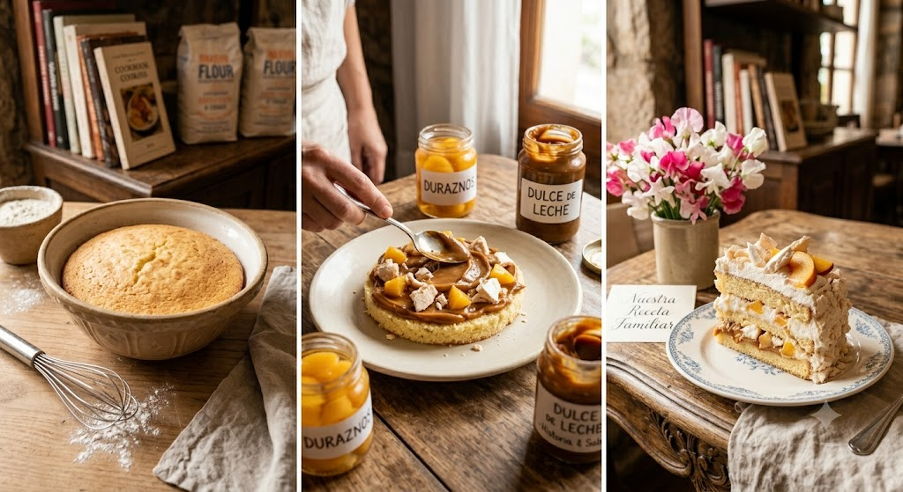
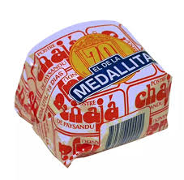

Best kept Secret
"The origin of a masterpiece"
Discover the airy perfection of the world-renowned dessert from Paysandu, a masterpiece of artisan tradition since 1927 Chajá is a typical dessert from the city of Paysandú, Uruguay. It consists of a sponge cake filled with Chantilly cream and peaches in syrup. It is then covered with Italian meringue and decorated with peach slices and more Chantilly cream.
.jpg)
"History and National Expansion"
The Chajá dessert was invented by Orlando Castellano, owner of the Las Familias confectionery, on April 27, 1927. It originated in Paysandú, but its fame has transformed it into a typical product throughout Uruguay.
"The secret of the formula and its family legacy"
It is also exported to countries like Argentina, Brazil, Paraguay, and to countries like the USA and Spain, where there are large Uruguayan immigrant communities. The secret to its longevity rested on the following pillars: Division of the process: Castellano divided the preparation of the dessert into distinct physical stages within his shop. No employee or pastry chef knew the entire formula; each prepared a part separately (such as the sponge cakes or meringues), and the final assembly with the secret cream was done exclusively by the family. (Chajá Cake: 9 steps to make Chajá Dessert - Paulina Cocina). Generational family custody: The recipe was passed down strictly from generation to generation.
"Unalterable artisanal tradition"
Currently, the fourth generation of the Nardini/Castellano family runs the business, preserving this magical legacy and the exclusivity of its cream's composition. We spoke with Alfonso Nardini of the Las Familias confectionery. An interesting point to note is that despite the many years that have passed since that first Chajá dessert and the hundreds of advancements that have emerged, the Chajá continues to be made by hand.
"Authenticity Versus Industrialization"
The explanation is that it hasn't been possible to replace human hands with a machine capable of assembling it while maintaining its traditional shape. They've tried making several trips abroad to find such a machine, but without success. They don't want to change the original shape because it would lose its authenticity and cease to be the original. What they have achieved is a longer shelf life for the dessert without altering its flavor.
"The Analogy of the Native Bird"
Its name, Chajá, comes from a bird native to South America, with Uruguay being one of the countries where it was frequently seen, as it inhabits low-lying areas, preferably near freshwater sources, on the shores of lakes, lagoons, and grasslands.
It's a bird with abundant plumage and a very light body, as it has empty spaces under its skin, called air cavities. And as the story goes, this person, upon observing this bird with its airy plumage and light body, compared it to his dessert, adopting the name.
"Characteristics of the Chajá and the Conclusion of the Legend"
The Southern Screamer is a very unique bird, as very few others share its anatomy. They can be easily domesticated, feed exclusively on plants, and are known for their protective nature towards young.
Both males and females look similar. And to conclude this story, according to legend, it was given the name "Chajá" because its cry sounds like the word.
The Chajá at the Beer Festival
Beer Week in Paysandú is one of Uruguay's most popular tourist events, and the Chajá dessert found the perfect setting there to establish itself as the quintessential culinary souvenir. For decades, visitors to the festival haven't left the city without trying the dessert at the traditional Confitería Las Familias or at the designated stands. Its freshness and ingredients (sponge cake, Italian meringue, Chantilly cream, and peaches in syrup) have made it the ideal dessert to enjoy during the celebratory afternoons and evenings.
